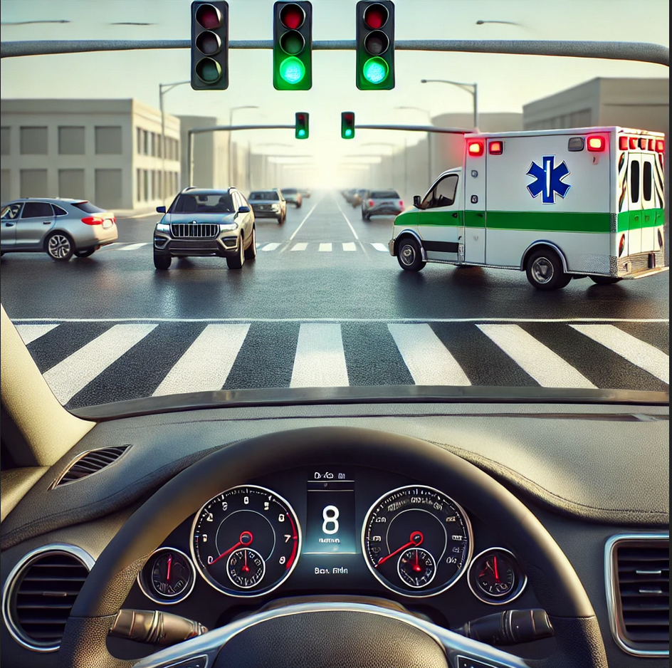

1. The tale of the deep learning model that failed my driving exam#
It’s exam day, and you are the driving evaluator. Two very different “drivers” are up for their final test, and it’s your job to determine if they’re ready for a driving license. The first candidate is a teenager, Sarah—she’s about 18, a little nervous but focused. The second “driver” is not a person at all; it’s a deep learning model based on a massive Transformer architecture, trained to predict driving actions like turning, braking, and accelerating based on live HD camera input.
You take both out on a pre-defined driving circuit, where they’ll need to handle basic maneuvers. But there’s one test you’re particularly interested in; a tricky intersection with a catch: as they approach, the traffic light is green, but just as they get closer, an ambulance speeds through and crosses the intersection.
{kind=link}

Fig. 1.1 Driving test scenario: the traffic light is green, but just as the driver gets closer, an ambulance speeds through and crosses the intersection. Image generated with GPT4-o.#
You ride with Sarah first. As you approach the intersection, the ambulance cuts across. Sarah reacts quickly, easing the car to a stop. You’re pleased—she’s cautious, and made the right call.
Next, you get into the vehicle controlled by the deep learning model. The system, connected to the car’s camera, processes the scene in real time. It, too, stops smoothly as the ambulance passes, seemingly making the correct decision. You feel a sense of relief—both drivers handled the situation perfectly.
However, you are a stickler for details. Stopping was the right move, but did they both do it for the right reasons? Was it understanding or just luck? To find out, you turn to your post-drive evaluation questions, aimed at revealing the drivers’ thought processes.
You start with Sarah. “Can you explain to me why you decided to stop?”, you ask.
“I saw the green light, and I was ready to cross,” she begins. “But then the ambulance appeared. I would have crossed if the ambulance wasn’t there, but I know for sure that I would never cross in the presence of an ambulance.” Her response is clear and confident.
Satisfied with Sarah’s reasoning, you grant her the driving license. She clearly understood the situation and could articulate her decision-making process. She’ll be a cautious and responsible driver.
Now it’s the deep learning model’s turn. You turn to your friend, who is an AI expert, for help with interpreting the model’s behavior. “Can you explain to me why the model decided to stop?” you ask.
Your friend accesses the system and provides an explanation: “When the mean activation of input embedding block 42 exceeds 173, the model usually chooses to stop. However, in this case, if pixel 2,890 has an RGB value of (28, 178, 111), the model would chose to cross the road instead”.
You frown, confused. What does that have to do with stopping for an ambulance? The explanation feels disconnected from the real-world reasoning you’re used to hearing. The model’s response is technical, tied to pixel values and activations, rather than an understanding of traffic rules or emergency vehicles. It stopped, yes, but did it truly understand why?
As you sit there, contemplating, the question lingers in your mind: would you give this deep learning model a driving license?